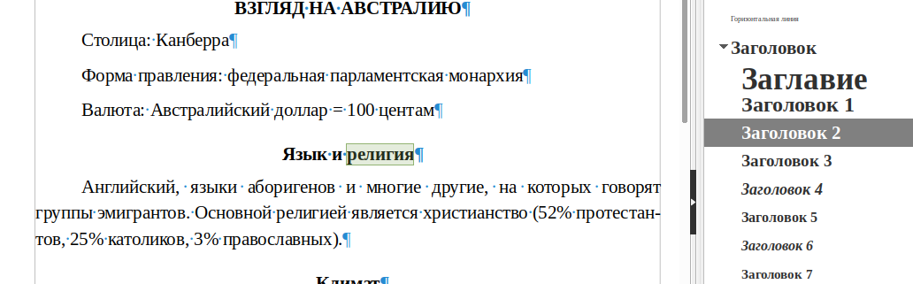

ДЕПАРТАМЕНТ ПРОФЕССИОНАЛЬНОГО ОБРАЗОВАНИЯ
ТОМСКОЙ ОБЛАСТИ
ОБЛАСТНОЕ ГОСУДАРСТВЕННОЕ БЮДЖЕТНОЕ ПРОФЕССИОНАЛЬНОЕ ОБРАЗОВАТЕЛЬНОЕ УЧРЕЖДЕНИЕ
«ТОМСКИЙ ТЕХНИКУМ ИНФОРМАЦИОННЫХ ТЕХНОЛОГИЙ»
ТОМСКОЙ ОБЛАСТИ
ОБЛАСТНОЕ ГОСУДАРСТВЕННОЕ БЮДЖЕТНОЕ ПРОФЕССИОНАЛЬНОЕ ОБРАЗОВАТЕЛЬНОЕ УЧРЕЖДЕНИЕ
«ТОМСКИЙ ТЕХНИКУМ ИНФОРМАЦИОННЫХ ТЕХНОЛОГИЙ»
Специальность 090207 «Информационные системы и программирование»
Отчет по лабораторно-практической работе №3
учебной дисциплины
Стандартизация,Сертификация и Техническое Документирование
Тема: «Создание и сохранение документа. Ввод текста. Установка параметров страницы. Форматирование шрифта и текста. Создание оглавления.»
учебной дисциплины
Стандартизация,Сертификация и Техническое Документирование
Тема: «Создание и сохранение документа. Ввод текста. Установка параметров страницы. Форматирование шрифта и текста. Создание оглавления.»
| Студент «__»________ 2021 г. |
_________________ | Кулманаков И.В. |
| Руководитель «__»________ 2021 г. |
_________________ | Чернова Ю.С. |
Томск 2021
Содержание
Введение
Цель
Научиться следующей деятельности:
- Создание и сохранение документа.
- Ввод текста.
- Установка параметров страницы.
- Форматирование шрифта и текста.
- Создание оглавления.
Задания
- Создать новый документ и назвать его «Задание_5».
- Задать параметры страницы 2-2-4-4, шрифт 14пт, Times New Roman.
- Набрать приведенный текст «ВЗГЛЯД НА АВСТРАЛИЮ», соблюдая абзацы и заголовки.
- Проверить орфографию и грамматику.
- Задать автоматическую расстановку переносов, установив необходимые параметры.
- Отформатировать абзацы – интервал между абзацами 6 пт.
- Заголовки определить специальным стилем Заголовок1,2,...
- Сформировать оглавление.
Ход работы
Задание 1. Создание документа
Сохранение документа
Задание 2. Задание параметров страницы
Задание параметров страницы
Примечание: из задания не понятно что значит "параметры страницы 2-2-4-4" Предположительно, это поля страницы, но непонятно ни единиц измерения, ни порядок обозначания (верх-право-низ-лево или верх-низ-лево-право). Сделано в порядке запроса приложением.
Задание параметров шрифта
Задание 3. Набор текста
Набрано. Результат в результате.
Задание 4. Проверка орфографии.
Проверка орфографии
Задание 5. Переносы
Задание автоматической расстановки переносов
Задание 6. Интервал между абзацами.
Настройка интервала между абзацами
Примечание: Libre Office Writer считает интервал между абзацами в долях от высоты строки, были совершены вычисления, показывающие, что это число примерно равно 0,45.
Задание 7. Специальные стили заголовков
Специальный стиль установлен на заголовок 1

Специальный стиль установлен на заголовок 2
Задание 8. Вставка автооглавления.
Итог работы
Страница 1
Страница 2
Вывод
В ходе выполнения практической работы была выполнена практическая работа.